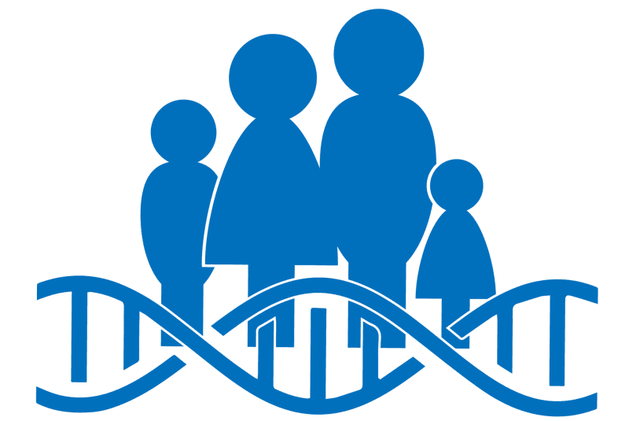

¿De que trata esta pagina?
Esta pagina tratara de algunas de las enfermedades geneticas más comunes las cuales son el enanismo y el gigantismo.
Las enfermedades geneticas
Las enfermedades genéticas son aquellas que están causadas por cambios en el material genético (ADN). Un individuo está sano cuando todas sus células desempeñan correctamente sus funciones. Para ello, es necesario que las proteínas de cada célula actúen de manera adecuada.
La causa común de todas las enfermedades hereditarias es la mutación o el defecto de un gen del ADN: sin embargo, dependiendo del tipo de enfermedad, el gen afectado por estas mutaciones cambia.
Las enfermedades genéticas son aquellas que están causadas por cambios en el material genético (ADN).
Un individuo está sano cuando todas sus células desempeñan correctamente sus funciones. Para ello, es necesario que las proteínas de cada célula actúen de manera adecuada. Cuando se produce una mutación en un gen, se produce un cambio en el modo de acción de una de esas proteínas, lo cual puede dar lugar a una enfermedad genética.
